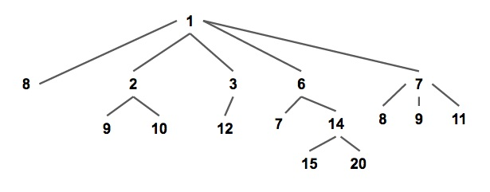
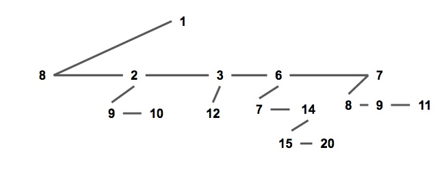
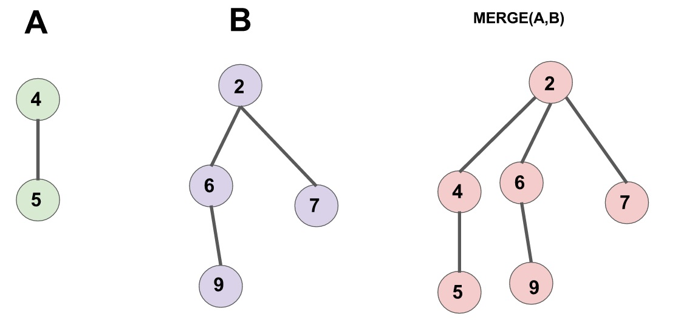
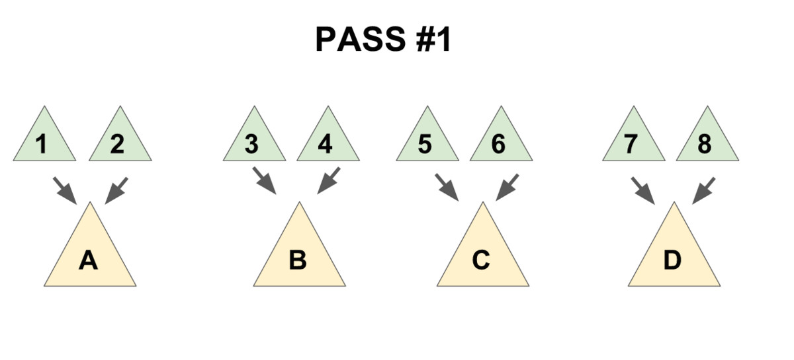
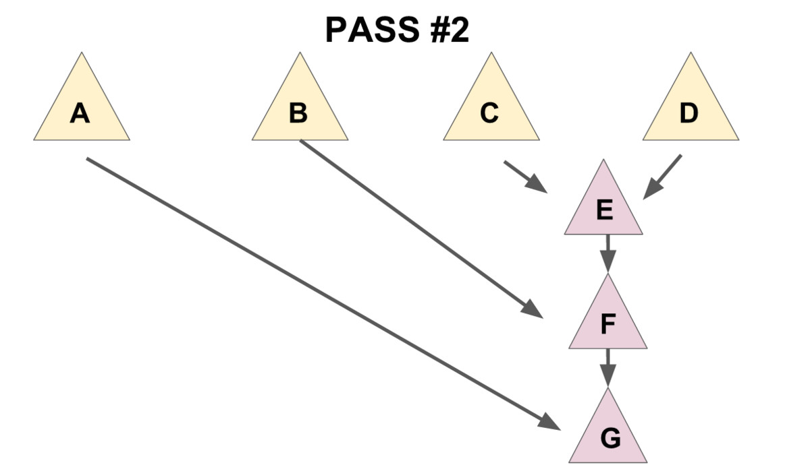

OI Wiki · prijevod · Strukture podatakaOI Wiki · translation · Data structures
Pairing heapPairing heap
Sadržaj
Uvod
Pairing heap (uparujući heap) struktura je podataka koja podržava umetanje, upit za minimum / brisanje minimuma, spajanje, izmjenu elemenata i druge operacije; riječ je o spojivom heapu (mergeable heap). Prednosti su mu brzina i jednostavna struktura, ali budući da mu je složenost amortizirana i temelji se na analizi potencijala, ne može se učiniti perzistentnim.
Definicija
Pairing heap je težinsko stablo s proizvoljnim brojem djece koje zadovoljava svojstvo heapa (vidi sliku), tj. težina svakog čvora manja je ili jednaka težinama sve njegove djece (uzimamo min-heap kao primjer, kao i u nastavku).

Pairing heap obično pohranjujemo prikazom „dijete–brat” (vidi sliku): sva djeca jednog čvora čine jednostruko vezanu listu. Svaki čvor čuva pokazivač na prvo dijete, tj. na glavu te liste, i pokazivač na svojeg desnog brata.
Taj je način pogodan za implementaciju pairing heapa, a olakšava i analizu složenosti.

struct Node {
T v; // T je tip težine
Node *child, *sibling;
// child pokazuje na prvo dijete čvora, sibling na sljedećeg brata.
// Ako čvor nema djece / sljedećeg brata, pokazivač je nullptr.
};
Iz definicije se vidi da, za razliku od ostalih uobičajenih heapova, pairing heap ne održava nikakve dodatne informacije poput veličine stabla, dubine ili ranga (binarni heap također ne održava dodatne informacije, ali složenost operacija osigurava održavanjem stroge strukture potpunog binarnog stabla), te da je svako stablo koje zadovoljava svojstvo heapa valjan pairing heap. Ta jednostavna, a vrlo fleksibilna struktura temelj je izvrsne praktične učinkovitosti pairing heapa; za usporedbu, loša konstanta Fibonaccijeva heapa posljedica je toga što on mora održavati mnogo dodatnih informacija.
Pairing heap ukupnu složenost osigurava pažljivo osmišljenim redoslijedom operacija; izvorni rad1 naziva ga „samoprilagođavajućim heapom” (Self Adjusting Heap). U tome je prilično sličan Splay stablu (koje se u izvornom radu naziva „Self Adjusting Binary Tree”).
Postupak
Upit za minimum
Iz definicije pairing heapa vidi se da korijen sigurno ima najmanju težinu, pa jednostavno vratimo korijen.
Spajanje
Spajanje dvaju pairing heapova vrlo je jednostavno: najprije manji od dvaju korijena proglasimo novim korijenom, a zatim veći korijen umetnemo kao njegovo dijete (vidi sliku).

Treba primijetiti da je lista djece jednog čvora poredana po vremenu umetanja: krajnji desni čvor najranije je postao dijete roditelja, a krajnji lijevi najkasnije.
Implementacija
Node* meld(Node* x, Node* y) {
// ako je jedan prazan, vrati drugi
if (x == nullptr) return y;
if (y == nullptr) return x;
if (x->v > y->v) std::swap(x, y); // nakon swapa x je heap s manjom težinom, y s većom
// y postaje dijete od x
y->sibling = x->child;
x->child = y;
return x; // novi korijen je x
}
Umetanje
Kad imamo spajanje, umetanje je jednostavno: novi element promatramo kao novi pairing heap i spojimo ga s izvornim heapom.
Brisanje minimuma
Najprije treba spomenuti da su dosadašnje operacije prilično „lijene” i uopće ne održavaju strukturu podataka, pa operaciju brisanja minimuma moramo pažljivo osmisliti kako ukupna složenost ne bi stradala.
Korijen je minimum, pa brišemo korijen. Razmotrimo što se događa kad uklonimo korijen: sva dotadašnja djeca korijena čine šumu, a pairing heap mora biti stablo, pa tu djecu moramo spojiti nekim redoslijedom.
Prirodna je ideja funkcijom meld spajati djecu redom slijeva nadesno; ispravnost je očita, ali tako složenost jedne operacije degradira na \(O(n)\).
Da bi se zajamčila ukupna amortizirana složenost, koristi se spajanje „u dva koraka”:
- djecu uparimo po dvoje i operacijom
meldspojimo dva djeteta iz istog para (vidi sliku 1), - novonastale heapove spajamo redom zdesna nalijevo (tj. od starijeg djeteta prema novijem) (vidi sliku 2).


Najprije implementirajmo pomoćnu funkciju merges koja spaja svu braću jednog čvora.
Implementacija
Node* merges(Node* x) {
if (x == nullptr || x->sibling == nullptr)
return x; // ako je stablo prazno ili nema sljedećeg brata, nema što spajati, return.
Node* y = x->sibling; // y je sljedeći brat od x
Node* c = y->sibling; // c je brat iza njega
x->sibling = y->sibling = nullptr; // razdvoji
return meld(merges(c), meld(x, y)); // ključni dio
}
Posljednja naredba srž je funkcije i ima tri dijela:
meld(x,y)„upari” x i y.merges(c)rekurzivno spaja c i njegovu braću.- Dva nova stabla nastala u prethodna dva koraka spoje se.
Treba uočiti da je, kako je rečeno, smjer spajanja u drugom koraku propisan (zdesna nalijevo); ova rekurzivna implementacija već osigurava taj redoslijed. Ako čitatelj želi sam napisati iterativnu inačicu, svakako mora paziti na taj redoslijed, inače složenost više nije zajamčena.
Kad imamo funkciju merges, operacija delete-min je očita.
Implementacija
Node* delete_min(Node* x) {
Node* t = merges(x->child);
delete x; // ako je potrebno oslobađanje memorije
return t;
}
Smanjivanje vrijednosti elementa
Za ovu operaciju čvoru treba dodati pokazivač „otac”: ako čvor ima lijevog brata, pokazivač pokazuje na lijevog brata, a ne na stvarnog roditelja; inače pokazuje na roditelja.
Najprije definiciju čvora mijenjamo u:
Implementacija
struct Node {
LL v;
int id;
Node *child, *sibling;
Node *father; // novo: pokazivač na oca; ako je čvor korijen, pokazuje na nullptr
};
Operaciju meld mijenjamo u:
Implementacija
Node* meld(Node* x, Node* y) {
if (x == nullptr) return y;
if (y == nullptr) return x;
if (x->v > y->v) std::swap(x, y);
if (x->child != nullptr) { // novo: održavanje pokazivača na oca
x->child->father = y;
}
y->sibling = x->child;
y->father = x; // novo: održavanje pokazivača na oca
x->child = y;
return x;
}
Operaciju merges mijenjamo u:
Implementacija
Node *merges(Node *x) {
if (x == nullptr) return nullptr;
x->father = nullptr; // novo: održavanje pokazivača na oca
if (x->sibling == nullptr) return x;
Node *y = x->sibling, *c = y->sibling;
y->father = nullptr; // novo: održavanje pokazivača na oca
x->sibling = y->sibling = nullptr;
return meld(merges(c), meld(x, y));
}
Razmotrimo sada kako implementirati operaciju decrease-key.
Najprije uočimo: kad smanjimo težinu čvora x, podstablo s korijenom x i dalje zadovoljava svojstvo pairing heapa, ali između roditelja od x i x svojstvo heapa možda više ne vrijedi.
Zato cijelo podstablo s korijenom x odrežemo; sada oba stabla zadovoljavaju svojstvo pairing heapa, pa ih spojimo i time je operacija dovršena.
Implementacija
// root je korijen heapa, x čvor nad kojim radimo, v nova težina; pri pozivu mora vrijediti v <= x->v
// povratna vrijednost je novi korijen
Node *decrease_key(Node *root, Node *x, LL v) {
x->v = v; // ažuriraj težinu
if (x == root) return x; // ako je x korijen, odmah vrati
// odreži x iz djece od fa; ovdje treba razlikovati položaj x-a.
if (x->father->child == x) {
x->father->child = x->sibling;
} else {
x->father->sibling = x->sibling;
}
if (x->sibling != nullptr) {
x->sibling->father = x->father;
}
x->sibling = nullptr;
x->father = nullptr;
return meld(root, x); // ponovno spoji x i korijen
}
Analiza složenosti
Struktura i implementacija pairing heapa jednostavne su, ali analiza vremenske složenosti nije laka.
Izvorni rad1 dokazao je samo da operacije meld i delete-min imaju amortiziranu složenost \(O(\log n)\), ali je iznio pretpostavku da sve operacije imaju istu složenost kao kod Fibonaccijeva heapa.
Nažalost, poslije je otkriveno da kod pairing heapa koji ne održava dodatne informacije, za određene nizove operacija, donja granica amortizirane složenosti operacije decrease-key iznosi barem \(\Omega (\log \log n)\)2.
Trenutačno su razmjerno dobre procjene gornje granice složenosti: Iaconova \(O(1)\) za meld i \(O(\log n)\) za decrease-key3; Pettiejeva \(O(2^{2 \sqrt{\log \log n}})\) za meld i decrease-key4. Treba naglasiti da su sve navedene složenosti amortizirane, pa se ne smije za svaku operaciju zasebno uzeti najmanji od rezultata.
Literatura
Contents
Introduction
A pairing heap is a data structure supporting insertion, find-min/delete-min, merging, modifying elements and other operations; it is a mergeable heap. It has the advantages of speed and structural simplicity, but since its complexity is amortized and based on potential analysis, it cannot be made persistent.
Definition
A pairing heap is a weighted multiway tree satisfying the heap property (see the figure below), i.e. the weight of every node is less than or equal to that of all its children (taking a min-heap as the example, likewise below).
We usually store a pairing heap in the child-sibling representation (see the figure below): all children of a node form a singly linked list. Each node stores a pointer to its first child, i.e. the head of that list, and a pointer to its right sibling.
This representation makes the pairing heap easy to implement and also convenient for complexity analysis.
struct Node {
T v; // T is the weight type
Node *child, *sibling;
// child points to the first child of this node, sibling to its next sibling.
// If the node has no children / no next sibling, the pointer is nullptr.
};
From the definition we can see that, compared with other common heap structures, a pairing heap does not maintain any extra information such as tree size, depth or rank (a binary heap does not maintain extra information either, but it guarantees the complexity of its operations by maintaining a strict complete-binary-tree structure), and any tree satisfying the heap property is a valid pairing heap. This simple yet highly flexible data structure is the foundation of the pairing heap's excellent efficiency in practice; by contrast, the poor constant factor of the Fibonacci heap is due to the large amount of extra information it has to maintain.
The pairing heap guarantees its total complexity through a carefully designed order of operations; the original paper1 calls it a "Self Adjusting Heap". In this respect it is quite similar to the Splay tree (called a "Self Adjusting Binary Tree" in the original paper).
Procedures
Find-min
From the definition of the pairing heap, the root must have the minimum weight, so we simply return the root.
Merge
Merging two pairing heaps is very simple: first let the smaller of the two roots be the new root, then insert the larger root as its child. (See the figure below.)
Note that the child list of a node is ordered by insertion time: the rightmost node became a child of the parent earliest, and the leftmost node most recently.
Implementation
Node* meld(Node* x, Node* y) {
// if one is empty, return the other
if (x == nullptr) return y;
if (y == nullptr) return x;
if (x->v > y->v) std::swap(x, y); // after the swap x is the heap with the smaller weight, y the larger
// make y a child of x
y->sibling = x->child;
x->child = y;
return x; // the new root is x
}
Insert
With merge available, insertion simply treats the new element as a new pairing heap and merges it with the original heap.
Delete-min
First of all, the operations above are all very lazy and do no maintenance of the data structure at all, so we have to design the delete-min operation carefully to make sure the total complexity does not suffer.
The root is the minimum, so the root is what we delete. Consider what happens after removing the root: all former children of the root form a forest, while a pairing heap should be a tree, so we need to merge all these children in some order.
A very natural idea is to use the meld function to merge the children one by one from left to right; this is obviously correct, but it makes the complexity of a single operation degrade to \(O(n)\).
To guarantee the total amortized complexity, a "two-pass" merging method is needed:
- pair the children up two by two and use
meldto merge the two children of each pair (see figure 1 below), - merge the newly created heaps one by one from right to left (i.e. from the older children toward the newer ones) (see figure 2 below).
First implement a helper function merges that merges all siblings of a node.
Implementation
Node* merges(Node* x) {
if (x == nullptr || x->sibling == nullptr)
return x; // if the tree is empty or it has no next sibling, nothing to merge, return.
Node* y = x->sibling; // y is the next sibling of x
Node* c = y->sibling; // c is the sibling after that
x->sibling = y->sibling = nullptr; // detach
return meld(merges(c), meld(x, y)); // the core part
}
The last statement is the core of this function and consists of three parts:
meld(x,y)"pairs" x and y.merges(c)recursively merges c and its siblings.- The two new trees produced by the above two operations are merged.
Note that, as mentioned above, the merging direction in the second step is prescribed (merge from right to left); this recursive implementation already guarantees that order. If readers want to implement an iterative version themselves, be sure to preserve this order, otherwise the complexity guarantee is lost.
With the merges function, the delete-min operation is obvious.
Implementation
Node* delete_min(Node* x) {
Node* t = merges(x->child);
delete x; // if memory reclamation is needed
return t;
}
Decrease-key
To implement this operation, nodes need an additional "father" pointer: when a node has a left sibling, it points to the left sibling instead of the actual parent; otherwise it points to its parent.
First the node definition is changed to:
Implementation
struct Node {
LL v;
int id;
Node *child, *sibling;
Node *father; // new: father pointer; if this node is the root it points to nullptr
};
The meld operation is changed to:
Implementation
Node* meld(Node* x, Node* y) {
if (x == nullptr) return y;
if (y == nullptr) return x;
if (x->v > y->v) std::swap(x, y);
if (x->child != nullptr) { // new: maintain the father pointer
x->child->father = y;
}
y->sibling = x->child;
y->father = x; // new: maintain the father pointer
x->child = y;
return x;
}
The merges operation is changed to:
Implementation
Node *merges(Node *x) {
if (x == nullptr) return nullptr;
x->father = nullptr; // new: maintain the father pointer
if (x->sibling == nullptr) return x;
Node *y = x->sibling, *c = y->sibling;
y->father = nullptr; // new: maintain the father pointer
x->sibling = y->sibling = nullptr;
return meld(merges(c), meld(x, y));
}
Now let us consider how to implement the decrease-key operation.
First we notice that after decreasing the weight of node x, the subtree rooted at x still satisfies the pairing heap property, but the heap property between the parent of x and x may no longer hold.
So we cut out the whole subtree rooted at x; now both trees satisfy the pairing heap property, and merging them completes the whole operation.
Implementation
// root is the root of the heap, x the node to operate on, v the new weight; the caller must ensure v <= x->v
// the return value is the new root
Node *decrease_key(Node *root, Node *x, LL v) {
x->v = v; // update the weight
if (x == root) return x; // if x is the root, return directly
// cut x out of the children of fa; the position of x has to be distinguished here.
if (x->father->child == x) {
x->father->child = x->sibling;
} else {
x->father->sibling = x->sibling;
}
if (x->sibling != nullptr) {
x->sibling->father = x->father;
}
x->sibling = nullptr;
x->father = nullptr;
return meld(root, x); // merge x and the root again
}
Complexity analysis
The structure and implementation of the pairing heap are simple, but the time complexity analysis is not easy.
The original paper1 only analyzed the complexity to the extent that meld and delete-min are both amortized \(O(\log n)\), but conjectured that all its operations have the same complexity as the Fibonacci heap.
Unfortunately, it was later found that for a pairing heap that maintains no extra information, under certain sequences of operations the amortized complexity of decrease-key has a lower bound of at least \(\Omega (\log \log n)\)2.
Currently, the better estimates of the upper bounds are: Iacono's \(O(1)\) meld and \(O(\log n)\) decrease-key3; Pettie's \(O(2^{2 \sqrt{\log \log n}})\) meld and decrease-key4. Note that all these complexities are amortized, so one cannot take the minimum of the results for each operation separately.